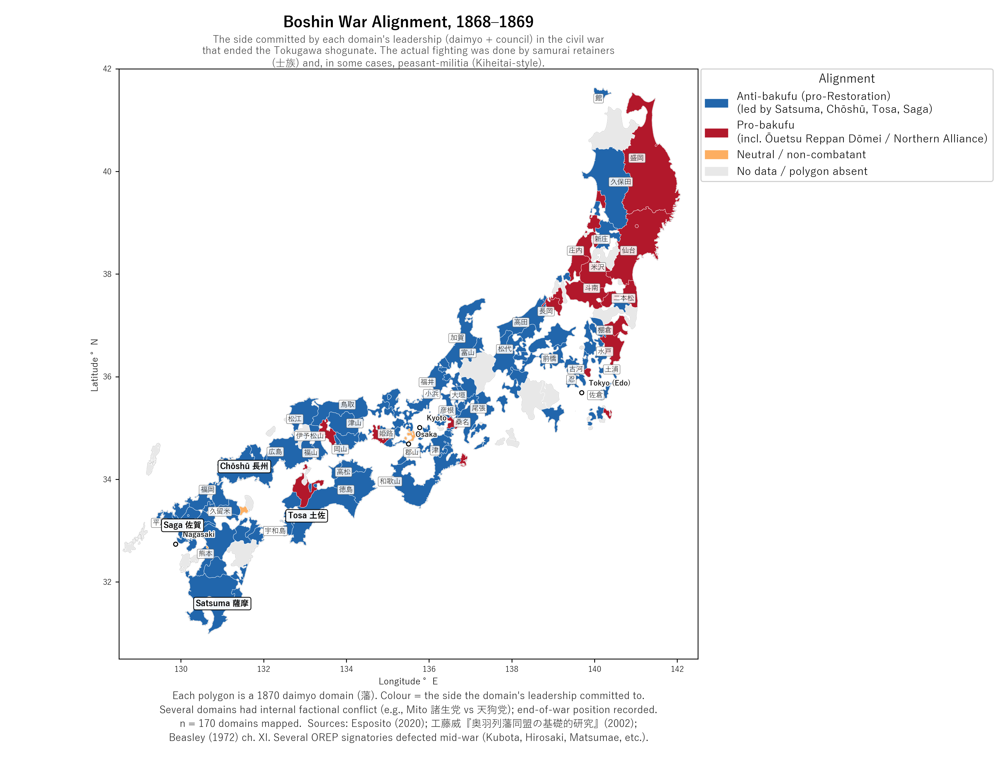

22 Boshin alignment (the paper’s treatment variable)
The Boshin War (戊辰戦争, Boshin sensō, 1868–69) was the civil war that ended the Tokugawa bakufu (幕府, the shōgunate). Every daimyō (大名) family had to take a side. Sixteen years later, those choices mattered for the kazoku (華族) rank they received.
When this chapter says “Satsuma was anti-bakufu” or “Aizu joined the Northern Alliance,” the literal claim is:
- The daimyō and his council committed the domain to that side
- The samurai retainers (shizoku (士族)) and (in Chōshū’s case) peasant militia (the Kiheitai, etc.) did the actual fighting
- Modern small arms and warships were procured by the domain’s foreign-trade office
A domain (藩) was a political unit; battles were fought by people. But the map shades polygons because each side’s military commitment was decided at the level of the domain’s leadership. Click any polygon in the interactive map to see the daimyō, the family, and the alignment together.
Several domains had internal civil war over which side to take (Mito’s 諸生党 vs 天狗党 factions are the most famous example). For those cases, the column records the dominant or end-of-war faction’s position.
22.1 The two coalitions
Imperial coalition (anti-bakufu)
Led by:
- Satsuma (薩摩藩) — Shimazu family
- Chōshū (長州藩) — Mōri family
- Tosa (土佐藩) — Yamauchi family
- Saga (佐賀藩) — Nabeshima family
These four — 薩長土肥 (Sat-Chō-Do-Hi) — were the political-military spine of the Restoration.
Joined later by:
- Most western and southern domains (post-Toba-Fushimi)
- Hikone (Ii family — switched sides before Toba-Fushimi)
- Yodo (defected during Toba-Fushimi)
- Most tozama (外様) after January 1868
N = 236 domains total.
Pro-bakufu / Tokugawa-loyalist
Led by:
- Aizu (会津藩) — Matsudaira family (collateral Tokugawa)
- Kuwana (桑名藩) — Hisamatsu-Matsudaira
- Tokugawa bakufu forces (Shōgitai, Shinsengumi, Denshutai)
Ōuetsu Reppan Dōmei (奥羽越列藩同盟) — the Northern Alliance:
- 31 northern domains, led by Sendai (仙台) + Aizu
- Including: Yonezawa, Shōnai, Morioka, Nagaoka, Nihonmatsu, Hachinohe, Iwakidaira, others
- Several defected to Imperial side mid-war (Akita, Hirosaki, Matsumae, Shinjō, Honjō, Shibata, Moriyama, Yashima, Miharu)
N = 40 domains total (after corrections for the defectors).
Neutral: 10 domains (small, non-combatant houses that took no active side — e.g. Takatsuki, Hiji, Uto).
22.2 Map: Boshin alignment

22.3 What changed during the war
The Boshin alignment classification represents the end-of-war position, not the initial declaration. Several domains shifted:
| Domain | Initial position | End-of-war | Why |
|---|---|---|---|
| 加賀藩 (Kaga) | Pro-shōgun (将軍) (cautious) | Anti-bakufu | Submitted to Imperial Hokuriku pacification army post-Toba-Fushimi |
| 淀藩 (Yodo) | Pro-bakufu (formally — fudai (譜代) house, lord was rōjū) | Anti-bakufu | Castle commander refused entry to retreating bakufu forces on 1868-01-28 |
| 彦根藩 (Hikone) | Pro-bakufu (Ii fudai) | Anti-bakufu | Switched before Toba-Fushimi (per Beasley 1972 p.297) |
| 久保田藩 (Akita) | Northern Alliance (signed) | Anti-bakufu | Defected mid-war to imperial side |
| 弘前藩 (Hirosaki) | Northern Alliance (signed) | Anti-bakufu | Defected |
| 守山藩 (Moriyama) | Northern Alliance (signed) | Anti-bakufu | Defected mid-war; corrected in the dataset (had been mis-classified as pro-bakufu in earlier coding) |
| 館藩 (=松前藩, Matsumae) | Northern Alliance (signed) | Anti-bakufu | Internal coup July 28 1868 |
| 三春藩 (Miharu) | Northern Alliance (signed) | Anti-bakufu | Defected July 26 |
| 新庄藩 (Shinjō) | Northern Alliance (signed) | Anti-bakufu | Defected |
The 1884 ennoblement rewards / penalties were calibrated to the final alignment — including for late-defectors. A domain that signed the Northern Alliance covenant but defected before the Aizu siege got treated like an Imperial ally, not a punished rebel. The data column reflects this: defectors are coded anti-bakufu / pro-restoration, with the alignment-source citation explaining the defection.
22.4 The cleanest signal: the 8 Restoration-reward upgrades
Of the 19 rank deviations the paper isolates (next chapter), 11 are upgrades. Eight of these are Restoration-service rewards, and all eight went to anti-bakufu / pro-restoration houses:
| Domain | Upgrade | Reason |
|---|---|---|
| 薩摩藩 (Satsuma) | marquess → prince | Shimazu, Boshin reward |
| 長州藩 (Chōshū) | marquess → prince | Mōri, Boshin reward |
| 福井藩 (Fukui) | count → marquess (1888) | Echizen-Matsudaira, Restoration role |
| 宇和島藩 (Uwajima) | count → marquess (1891) | Date-Uwajima cadet, Restoration loyalty |
| 大村藩 (Ōmura) | viscount → count | Restoration service |
| 佐土原藩 (Sadowara) | viscount → count | Shimazu cadet |
| 対馬府中藩 (Tsushima) | viscount → count | Korea diplomacy + kokushukaku (国主格) status |
| 津和野藩 (Tsuwano) | viscount → count | Kamei, Restoration role |
All 8 were anti-bakufu / pro-restoration. The remaining three upgrades went to pro-bakufu Tokugawa-lineage houses and reflect dynastic Tokugawa status, not Restoration merit:
| Domain | Upgrade | Reason |
|---|---|---|
| 静岡藩 (Shizuoka) | marquess → prince | The Tokugawa main house, relocated post-Restoration — dynastic standing, not Restoration service |
| 水戸藩 (Mito) | count → marquess | Mito Tokugawa, gosanke (御三家) lineage |
| 龍岡藩 (Tatsuoka) | viscount → count | Ōgyū-Matsudaira, Tokugawa-collateral house |
The other 8 deviations are the viscount→baron downgrades, governed by separate rule provisions that have nothing to do with Boshin alignment.
This is the paper’s clean empirical claim: among the 8 daimyō houses upgraded for Restoration service, 8 of 8 were anti-bakufu / pro-restoration aligned. The three upgrades that went to pro-bakufu houses were granted on the basis of Tokugawa dynastic lineage, not war service.
Citation chain: Esposito, G. & Rava, G., Japanese Armies 1868–1877: The Boshin War* and Satsuma Rebellion* (Osprey Men-at-Arms 530, 2020) — narrative + Northern Alliance core. 工藤威『奥羽列藩同盟の基礎的研究 (Ōu reppan dōmei no kisoteki kenkyū, “Basic Research on the Northern Alliance”)』岩田書院 (2002) — authoritative Northern Alliance roster (31 members, including defectors). Beasley, W. G., The Meiji Restoration (Stanford UP, 1972) — Ch. XI, plus Principal Domains in 1860 (p. xii). Per-domain citations are recorded in the Boshin-alignment source column of the analytic table.
Primary government decrees on Boshin punishments — the 明治史要 vol 1 pp. 128–131 entries documenting the 1868–69 imperial decrees that reduced Sendai-Date, Aizu, and Morioka (Nanbu) territories. Verbatim Japanese + working translation: The Boshin punishment decrees. The aftermath is narrated in The road to abolition.
Haihan-chiken focal-coalition primaries — the Boshin War’s anti-bakufu victors became the commended cohort of the 1871 abolition. The contemporary accounts of the decree (see Primary sources):
- The abolition decree — the imperial decree itself
- Inoue Kaoru’s account — the implementing minister’s biography
- Kido Takayoshi’s diary — the chief architect (Brown & Hirota 1983 trans.)
- Ōkubo Toshimichi’s diary and correspondence (Ōkubo Monjo vol. 4)